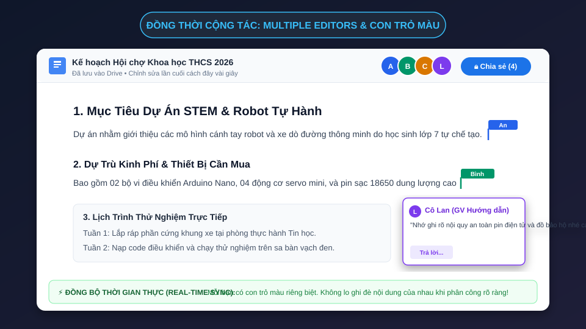
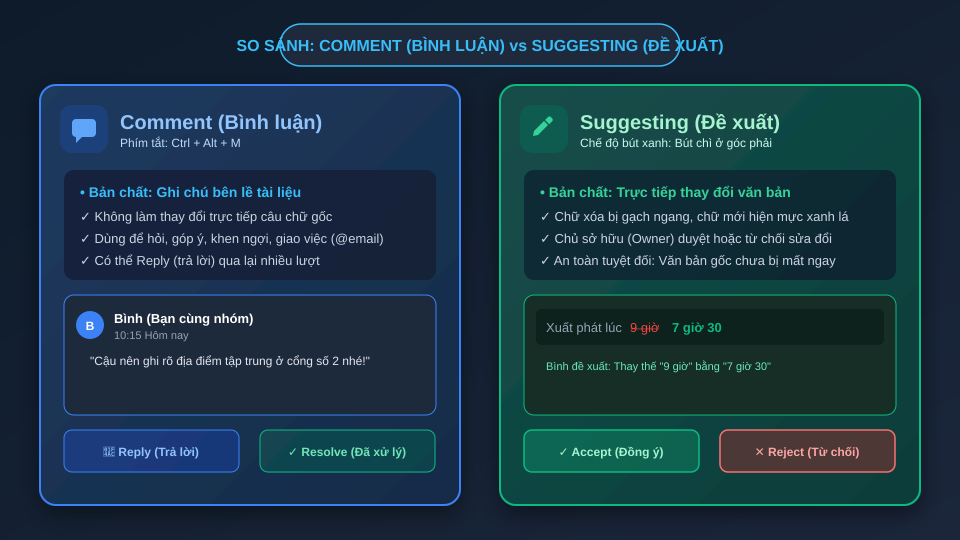
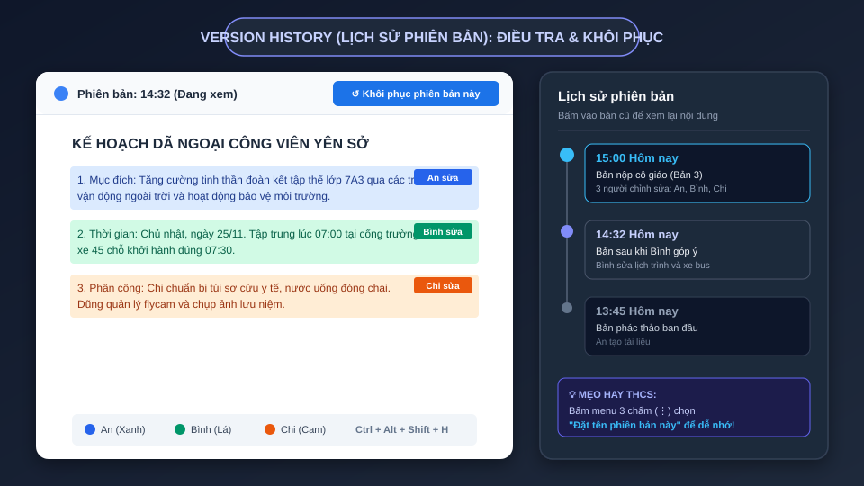
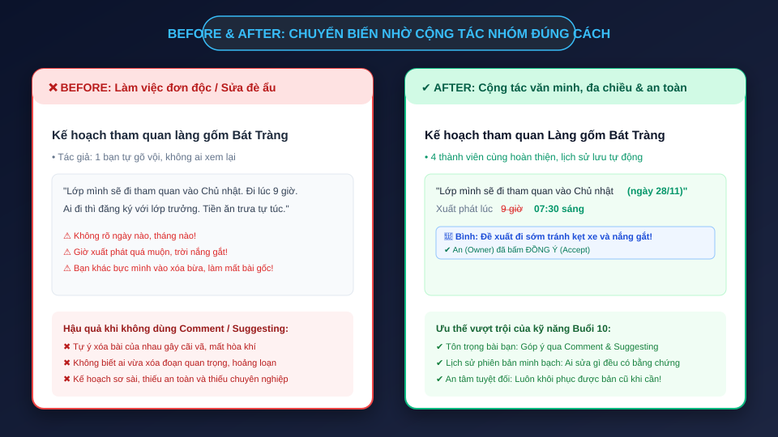

Chấm dứt hoàn toàn nỗi lo bạn vô tình xóa mất bài! Làm chủ kỹ năng làm việc nhóm đẳng cấp: Comment trao đổi văn minh, Suggesting sửa bài an toàn với vết mực xanh, và Version History "cỗ máy thời gian" cứu bài trong chớp mắt.
Sau 90 phút hôm nay, em sẽ hoàn toàn tự tin đảm nhiệm vai trò Trưởng nhóm hoặc Thư ký dự án.
Một cơn ác mộng kinh điển của học sinh THCS khi làm việc nhóm:
baocao_v1.docx, baocao_v2_sua.docx, baocao_final_chot.docx.Quan sát góc trên bên phải để biết ai đang online và con trỏ màu ở đúng dòng bạn đang soạn thảo.

Bình luận là cách văn minh nhất để thảo luận, hỏi ý kiến mà không làm biến dạng câu chữ gốc.
@tên_bạn hoặc @email để gửi thông báo tức thì đến hòm thư của bạn.Một chu trình thảo luận khoa học giúp tài liệu luôn sạch sẽ và gọn gàng.
"Cậu nên bổ sung số điện thoại của bác tài xế xe buýt vào đây nhé!"
"Mình đã xin được số rồi, để mình thêm vào bảng danh sách ngay."
Bấm dấu ✔ ở góc comment. Hộp thoại thu gọn ẩn đi, tài liệu trở lại sáng rõ!
Hai bạn cùng bàn phối hợp thực hiện bài tập tương tác ngay tại lớp:
Nhiệm vụ Bạn A: Viết câu: "Lớp mình sẽ đi tham quan vào Chủ nhật."
Nhiệm vụ Bạn B: Bôi đen từ "Chủ nhật", nhấn Ctrl + Alt + M, gõ: "Chúng ta nên ghi rõ ngày cụ thể."
Bạn A thao tác: Nhấn nút Reply trả lời "Đã sửa thành ngày 25/11" ➔ Nhấn Resolve (✔).
Khi muốn chỉnh sửa thẳng vào câu từ của bạn nhưng sợ bạn tự ái hoặc làm sai ý tác giả gốc.
Nhìn lên góc trên bên phải thanh công cụ, bấm vào biểu tượng Cây bút chì (Editing) ➔ Chọn chuyển sang Đề xuất (Suggesting - Bút xanh).
Mọi chữ em xóa sẽ bị gạch ngang đỏ/xanh, mọi chữ em gõ thêm sẽ hiện mực xanh lá. Chữ gốc vẫn nằm đó cho đến khi Owner bấm duyệt!
Hiểu rõ bản chất hai công cụ quyền lực để không dùng sai mục đích trong nhóm.

Chỉ có Chủ sở hữu tài liệu hoặc Editor được cấp quyền mới có quyền chấp nhận hay từ chối đề xuất.
Khi bạn thấy đề xuất rất hợp lý. Nhấn vào dấu tích xanh ✔:
Khi đề xuất chưa phù hợp hoặc làm sai ý đồ của nhóm. Nhấn dấu ✖:
Thử thách trải nghiệm cảm giác làm biên tập viên chuyên nghiệp:
Câu ban đầu của Owner: "Chúng ta sẽ xuất phát lúc 9 giờ."
Học sinh B thao tác: Bật chế độ Suggesting ➔ Bôi đen "9 giờ" gõ thành "7 giờ 30".
Owner thử nghiệm: Thấy hộp thoại đề xuất hiện lên bên phải ➔ Lần 1: Nhấn Reject (✖) để thấy câu trở về 9 giờ ➔ Lần 2: Bạn B gõ lại và Owner nhấn Accept (✔) để hoàn tất!
Mọi phiên chỉnh sửa đều được Google ghi nhớ từng giây. Đây là lá chắn an toàn nhất của em.
Ctrl + Alt + Shift + H (trên Mac: Cmd + Option + Shift + H) hoặc vào Tệp ➔ Lịch sử phiên bản.
Mỗi bạn có một màu riêng: An màu xanh biển, Bình màu xanh lá, Chi màu cam. Dễ dàng nhận diện ai viết gì.
Từng phút từng giây đều được liệt kê chi tiết bên cột timeline bên phải màn hình.
Minh họa trực quan bảng điều khiển Lịch sử phiên bản và dấu vết màu của từng thành viên.

Nếu chẳng may ai đó vô tình bấm nhầm xóa mất 5 trang bài, đừng lo lắng!
Khi em bấm Khôi phục bản cũ, phiên bản hiện tại (bản bị xóa) vẫn không hề mất đi! Nó chỉ được ghi nhận thêm một mốc mới trên timeline. Em luôn có thể lùi lại hoặc tiến lên bất kỳ thời điểm nào trong quá khứ!
Timeline có hàng trăm mốc tự động theo từng phút. Làm sao để tìm lại mốc quan trọng nhanh nhất?
Tại mốc thời gian muốn ghi nhớ, nhấp vào dấu 3 chấm dọc bên cạnh thời gian.
Gõ tên gợi nhớ dễ hiểu như: "Bản nháp 1", "Bản trước khi cô sửa", "Bản nộp cuối cùng".
Bật công tắc "Chỉ hiển thị các phiên bản được đặt tên" để giấu hàng trăm mốc phụ rườm rà!
Trò chơi thám tử truy vết tài liệu dành cho nhóm 3 bạn:
Kịch bản: Cả 3 bạn cùng truy cập vào 1 file Docs. Bạn A viết đoạn 1, Bạn B thêm đoạn 2, Bạn C cố tình đổi màu chữ đoạn 1.
Câu hỏi điều tra: Sau 3 phút, cả nhóm mở Ctrl+Alt+Shift+H và trả lời cô giáo 3 câu hỏi:
1. Ai là người đổi màu chữ đoạn 1?
2. Hành động đó diễn ra chính xác vào lúc mấy giờ mấy phút?
3. Hãy khôi phục lại tài liệu về thời điểm Bạn B vừa gõ xong đoạn 2!
Trở thành người đồng đội văn minh, được mọi người tin cậy và yêu quý.
Tuyệt đối không xóa thẳng tay bài của bạn khi chưa bàn bạc. Hãy dùng Comment để hỏi hoặc Suggesting để đề xuất.
Mỗi bạn nhận một đề mục cụ thể (Heading 2 riêng). Không nhảy vào cùng một dòng người khác đang gõ.
Thay vì chê "Viết dở tệ", hãy góp ý: "Đoạn này nên thêm số liệu cụ thể thì bài sẽ thuyết phục hơn nè!"
Trước khi nộp bài hoặc trước khi chỉnh sửa lớn, hãy đặt tên phiên bản để nhóm luôn có đường lui an toàn.
Bấm các nút bên dưới để thử nghiệm phản hồi của chế độ Đề xuất và Lịch sử:
So sánh trực quan giữa phong cách làm việc ẩu đả và phong cách làm việc nhóm hiện đại.

Làm việc theo nhóm 3–4 học sinh trong thời gian 25 phút:
Giáo viên ghép cặp 2 bạn. Mỗi bạn mở bài Google Docs của bạn mình:
Gợi ý sửa ý tứ hoặc khen ngợi một ý tưởng hay qua 2 bình luận lề phải.
Bật bút xanh đề xuất sửa 1 lỗi chính tả hoặc 1 câu văn mượt mà hơn.
Tuyệt đối không tự ý xóa sửa trực tiếp. Nộp link Docs có đầy đủ lịch sử cộng tác.
Ghi nhớ các phím tắt này để thao tác như một chuyên viên công nghệ:
Kiểm tra khả năng phản xạ và kiến thức của em:
Làm việc nhóm không phải là chia nhau ra làm rồi ghép bừa. Làm việc nhóm là cùng nhau tạo ra một sản phẩm tốt hơn rất nhiều so với một người làm đơn độc!
Góp ý tinh tế, tôn trọng sự sáng tạo của bạn bè.
Biên tập câu từ chuẩn xác với mực xanh và quyền duyệt minh bạch.
Không bao giờ sợ mất bài, tự tin thử nghiệm mọi ý tưởng mới!